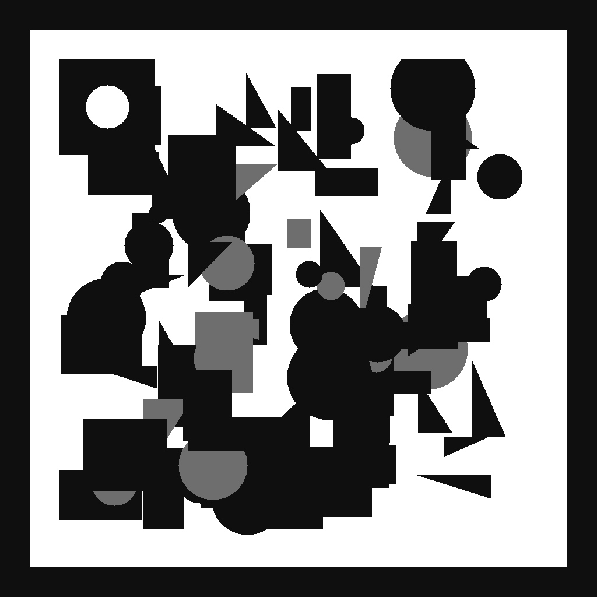

CircuitQR · 10 cm · vai na mesa

LupaMarker · 5 cm · vai na lupa
Como prender: cole num cartão rígido e prenda em pé no cabo, como uma bandeirinha, perpendicular ao aro, com a borda do quadrado preto virada para o aro. Se preferir colar deitado no plano do aro, use o botão "Girar 90°" em Ajustar lupa.